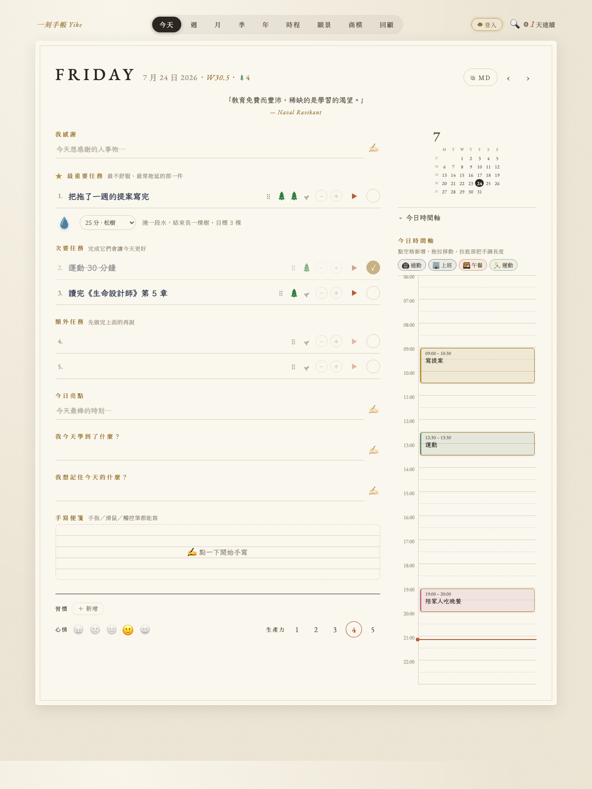
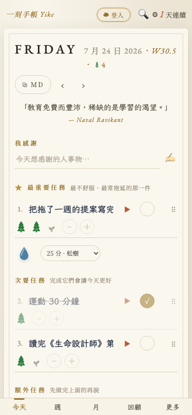
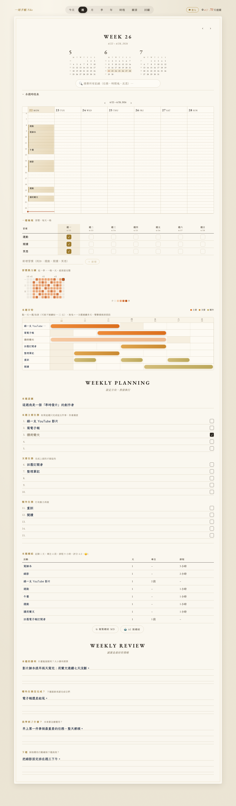
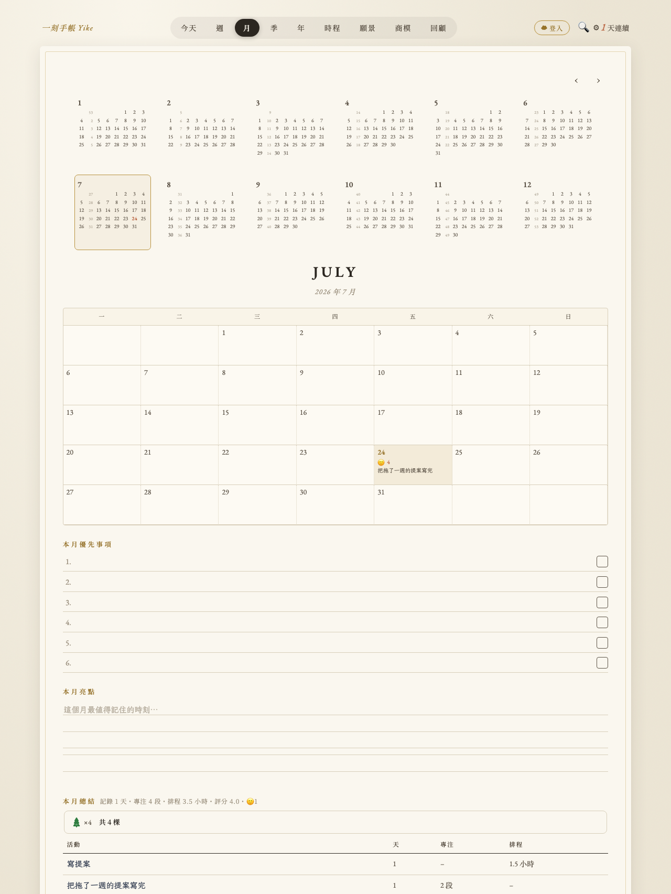
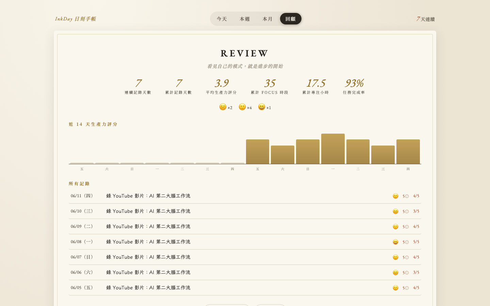

待辦清單永遠做不完，是因為什麼都「重要」。日刻手帳把紙本手帳的儀式感搬進螢幕：每天先選一件事，專注、塗圈、反思——其他的，等它做完再說。
免註冊・免下載・手機加入主畫面即是 App・資料 100% 存在你的裝置


源自紙本生產力手帳百年不變的循環——只是現在它會自己計時、自己塗圈、自己統計。
每天先回答一題：「今天就算只做成這一件，也值得了」——通常是最不舒服、最常拖延的那件。最多五項任務，少即是多。
先預估要幾段 30 分鐘，按 ▶ 開始倒數。每完成一段，塗掉一圈。墨點落下的瞬間，比任何打勾都療癒。
像 Google 日曆一樣把任務拖進時間軸，看見一天真實的樣子。紅線走到哪，你就在哪。
今日亮點？學到什麼？想記住什麼？加上心情與 1–5 評分。晨晚問題完全可自訂——把它變成你自己的方法。
一個節奏，五種視角。

七天並排的垂直時間軸，點任何空格快速排程。上方的搜尋框能搜遍所有歷史記錄——任務、時間塊、反思，命中的會在格子裡亮起來。

每一天的最重要任務、心情、評分都濃縮在月曆格子裡。配上「本月優先事項」與「本月亮點」，月底回顧不用翻三十頁。

連續記錄天數、平均生產力、累計專注小時、任務完成率、心情分布、近 14 天圖表。誠實是最好的策略——尤其是對自己。
所有記錄存在你的裝置上，沒有伺服器、沒有帳號、沒有人看得到你的日記。
註冊一個帳號，手機、電腦、iPad 即時同步——寫完上雲，打開就有。
PWA 加入主畫面後，飛機上也能寫。打開就是今天，零載入焦慮。
工具不該擋在習慣前面。日刻手帳完整功能免費，如果它讓你的每一天更清楚，再用一杯咖啡支持它繼續進化。
不用。打開就能寫，所有資料存在你的瀏覽器裡。建議手機用 Safari／Chrome 開啟後選「加入主畫面」，就跟原生 App 一樣。
右上角「☁ 登入」註冊帳號（Email＋密碼），所有裝置自動同步。不想註冊也可以在「回顧」頁一鍵匯出／匯入 JSON 備份。
可以。每日頁右上角的「⧉ MD」按鈕會把整天的記錄（任務、塗圈數、時間軸、反思）複製成乾淨的 Markdown，直接貼上即可，格式完美呈現。
會，這是「資料存在本機」的代價。所以請養成習慣：開啟 Gist 同步或定期匯出 JSON。你的日記值得一份備份。
方法一樣老派，但它會自己倒數計時、自動塗圈、自動算統計、可以搜尋三個月前的任何一句話——而且永遠不會寫到最後一頁。